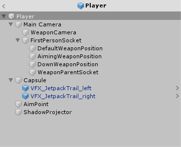
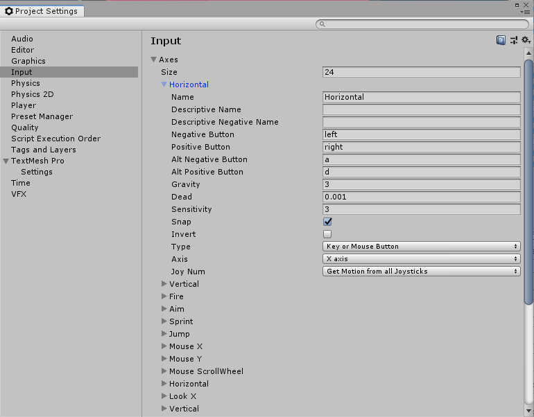
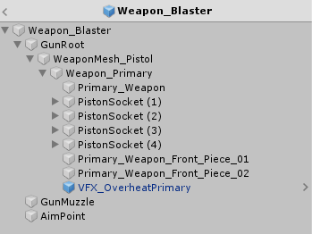
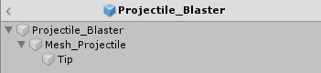
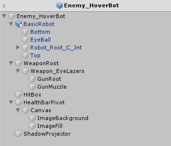
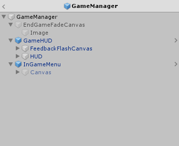

0x00
Unity 推出的一套免费教程，看了以后我差点就以为我能做游戏了！传送门！！！
这个教程属于非常基础的给入门的小朋友学习的工程，虽然流程很短，项目也很小巧，但贵在完整。
0x01
天空盒 「Window」-「Rendering」-「Lighting Settings」中，设置场景中显示的天空盒。
可以在这个(网站)[https://hdrihaven.com/hdris/category/?c=all&o=popular]上下载，自己做成材质放进来。
其实我是来学习目录结构的！
在这个项目中，使用的嵌套 prefab，将一个实体拆分得足够细致，基本的原则是将脚本挂载在根节点上，模型的结构在子对象中体现出来，而一些标记模型位置的空对象与模型子对象同级。
不仅如此，使用了嵌套 prefab 就可以将很多比如粒子系统制成 prefab 嵌套在不同的 prefab 对象中去。
prefab 变体（prefab variant）是用来通过现有的 prefab 创建的变种，可以简单的理解为对覆写的 prefab 进行了保存，因此在编辑 prefab 变体时的规则与在 Hierarchy 中操作 prefab 实例相同，可以修改参数添加子对象，但不能删除修改 prefab 中对象的结构。
工程中还使用了 proGrids 和 Navigation，教程中都有比较详细的使用方法。proGrids 可以更加方便地放置 GameObject，构成关卡；Navigation 来生成简单的寻路系统，甚至也可以自定义路径类型，让 AI 与其进行交互。
0x02
debug 的方式，使用一个单独的 debugHandler 脚本来在需要报错的地方处理报错，函数体内使用 UNITY_EDITOR 来判断是否执行，这样在发布的包中对性能的影响是一次空函数的调用。
- 看看 Player 结构啊：
玩家角色 prefab 的结构如下：

玩家控制的角色脚本入口为 PlayerCharacterController.cs 组件，保存角色行为的主循环
- PlayerInputHandler.cs 组件，Unity 中的操作配置在 「Project Settings」-「Input」中，

Horizontal 和 Vertical 是对移动进行的配置，可以看到此处是对 left 和 right 按键进行的配置，同样还有同名的配置是针对 a 和 d 按键。
工程中为了将此配置与逻辑分离，专门使用了 GameConstants.cs 对字符串常量进行定义。
为了对操作进行统一控制，在游戏中对“鼠标指针的锁定状态”和“游戏状态”求与获得控制变量。
- Health.cs 组件
定义了血量相关的属性与方法，提供了 3 个事件，分别在受伤，治疗和死亡时可以触发。可以设置伤势严重程度，用来在 UI 进行表现。
使用了一个 UnityAction 的泛型类来处理事件，是在 UnityEngine.Events 中定义的。
相应的方法，可以在被挂载的实体控制器中使用。
- PlayerWeaponsManager.cs 组件
WeaponCamera 仅用来显示第一视角的武器，将摄像机的 Clear Flags 设置为 Depth only 表示不，并将 Culling Mask 设置到 FirstPersonWeapon 层，即为武器所对应的层级。这样，由于 WeaponCamera 只显示武器相关，避免了在武器穿模时被遮挡的情况。
所有武器通过 WeaponController.cs 组件完成，在 PlayerWeaponsManager.cs 中也通过此组件进行管理，并且所有枪械的位置动画都是通过计算，在每一帧最后更新到武器的根节点予以表现。
- Jetpack.cs 组件
这是给玩家提供的特殊能力，可以在跳跃后进行空中移动。
1 | bool jetpackIsInUse = m_CanUseJetpack && isJetpackUnlocked && currentFillRatio > 0f && m_InputHandler.GetJumpInputHeld(); |
m_CanUseJetpack 是通过姿态位置和按键来判断是否可以触发技能；isJetpackUnlocked 是技能是否以解锁的控制量；currentFillRatio > 0f 是判断燃料是否用尽；最后判断是否保持跳跃键按下。
而正常技能解锁时，会通过 UI 来提示玩家，或显示相应的技能画面，
- CharacterController.cs 组件
是 Unity 提供的角色控制器，在 PlayerCharacterController 用来控制角色移动。
- Actor.cs 组件
用来描述敌对关系，主要在 AI 逻辑与决策中使用。
- Damageable.cs 组件
会取得绑定在同一对象上的 Health.cs 组件，在调用其 InflictDamage() 方法时，对指定 Health.cs 对象造成伤害。
- 武器相关的结构

武器的逻辑代码挂载在根节点上，子节点分别是模型结构，以及用来指示位置的 GameObject。
- WeaponController.cs
武器的主控制器，对武器的类型、属性进行配置，如准星类型，武器发射是自动还是需要蓄力等。同时武器还需要发射时的火光，以及射出的枪弹，这些都是通过制成不同的 prefab 得到的。
不同于实际的战争游戏中武器换弹的设计，这个 demo 中的枪械采用的子弹打光之后需要进行“冷却”。而下面两个脚本就是实现了这种机制具体的表现效果。
WeaponFuelCellHandler.cs
OverheatBehavior.cs
- 枪弹

枪弹通过两个脚本来进行定义，
- ProjectileBase.cs
提供 onShoot 事件，在 WeaponController.cs 中触发。
- ProjectileStandard.cs
配置子弹的各种属性，一些特殊的属性，可以通过更多的脚本来提供，如范围伤害，使用 DamageArea.cs 脚本，蓄力攻击的效果等，使用 ProjectileChargeParameters.cs 脚本。
- 拾取物
游戏中可可拾取物的配置主要是通过两个脚本实现的：
- Pickup.cs 组件
Pickup.cs 中对可拾取物的表现进行了配置。并提供了 onPick 事件，用来在物品被拾取时触发。
- xxxPickup.cs 组件
依赖 Pickup.cs 组件，定义了 xxx 拾取物被拾取后触发的功能。
- 敌人

组合了#@#￥%#54523@#￥…
- 游戏中的流程控制等控制器绑定在 GameManager 对象上：

- GameFlowManager.cs 组件
主循环中设置游戏完成的条件，判断是否结束。
- EnemyManager.cs 组件
管理敌人实体的注册与移除，对场景中敌人进行统计。
- ActorsManager.cs 组件
对 Actor 进行控制。
- ObjectiveManager.cs 组件
任务管理器，提供了任务的注册和管理，对全部任务的完成进行检查。
- AudioManager.cs 组件
只……保存了 Audio Mixer，可以后续定制。
0xff
好啦，水完了！撒花!